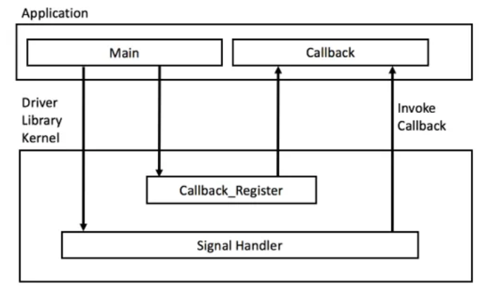

Lecture 9: Embedded System Basics
This course will explain in more details the principles of embedded programming, peripheral programming, and interrupt handling.
It is (temporarily) available through sildes here
Compiling teensy with Makefile?
The arduino environment is not mandatory to program Teensy. We show here how use simplem makefile to program the teensy. If you are using Windows OS, use the WSL terminal (Windows Subsystem for Linux)
- Download the teensy_makefile project here
- Untar the archive
tar xvf teensy_makefile.tarsomewhere (this will createteensy_makefiledirectory) - Go into the
teensy_makefiledirectory and edit theMakefileto fill up the definition of$ARDUINOPATH(your arduino installation) and$MYDSPPATH(location of the AUD MyDsp library on your computer). - Type
makecheck that the compilation is going well.
The object files are compiled in the build directory.
As one can see, we do not have a setup() and loop() function, but just a main() function with an initialization (which corresponds to the setup() function) and an infinite loop (which correponds to the loop() function). This is allways the case for embedded programming: initialization and infinite loop. Here, we know exactly what executes on the ARM CPU, and it is very explicit that the ARM processor is 100% running the loop doing nothing (i.e. no operating system is present on the ARM), hence sound processing relies on interrupts. A very common programming model for embedded system is to rely only on interrupts.
The main.cpp is this one:
#include <Arduino.h>
// See $ARDUINOPATH/hardware/teensy/avr/cos/teensy4/pins_arduino.h`
const int ledPin = LED_BUILTIN;
extern "C" int main(void)
{
pinMode(ledPin, OUTPUT);
// To use Teensy 4.0 without Arduino, simply put your code here.
while (1) {
digitalWrite(ledPin, HIGH); // set the LED on
delay(100); // flash for 100 ms
digitalWrite(ledPin, LOW); // set the LED off
delay(100); // wait for a second
}
}
To understand (or write this code):
- You have to know on which GPIO the LED has been soldered. You can look at the schematic of the Teensy 4.0 or a look at file
$ARDUINOPATH/hardware/teensy/avr/cos/teensy4/pins_arduino.hand guess which macro can be used for the LED pin (let's call itledPin). - Then you just have to know that this pin has to be configured in output mode:
pinMode(ledPin, OUTPUT)and that switching on and off the led can be done usingdigitalWrite(ledPin, HIGH);anddigitalWrite(ledPin, LOW); - Using the built in function
delay(int numMilliSeconds)write a program that blink the LED.
{kind=link}
INTERRUPTS
The principle of interrupt is the same on every machine. The processor running its program can receive interrupts (i.e. hardware interrupts no to mislead with software interrupts that are implemented by operating systems) at any time. An interrupt can be sent by a peripheral of the micro-controller (timer, radio chip, serial port, etc...), or received from the outside (via GPIOs) like the reset for example.
There is another way to communicate with peripherals which is called polling: regularly look a the state of the peripheral to see if something has changed. It is simpler than using interrupts but much more compute-intensive for the CPU.
It is the programmer who configures the peripherals (for example the timer) to send an interrupt during certain events. For instance the user can ask the timer to send an interruption every 1.5 second. We will see how to do that with the Teensy.
The interrupt "triggers" an interrupt handler (or interrupt routine service: ISR), special function called for this particular interrupt. Each interrupt has its own ISR. The correspondence between the interrupt and the ISR is done with the interrupt vector table. This means that each processor knows exactly which interrupt can occur. Each interrupt has a flag bit, which is set by hardware when the interrupt trigger condition occurs. For instance the list of interrupt flags of the Teensy (i.e. of CorteX-M7) is here.
The flag's purpose is to remember the interrupt condition has occurred until it has been handled by software. An interrupt is said to be "pending" if the trigger condition has set the flag but the interrupt service routine has not been called yet, which can happen if the main program has disabled interrupts or another interrupt service routine is running (usually, interrupts are disable during the execution of an ISR).
Usually, interrupt flags are automatically reset when the interrupt service routine is called. Some flags must be reset by the software inside the interrupt service routine. Some flags are completely controlled by the peripheral to reflect internal state (such as UART receive) and can only be changed indirectly by manipulating the peripheral.
All interrupts are used in roughly the same way.
- Configure The Peripheral
- Reset Interrupt Flag
- Set Interrupt Mask
- Enable Global Interrupt, with sei()
When the interrupt condition occurs, the interrupt flag is set. The interrupt service routine will be called at the first opportunity.
In "traditionnal" embedded microcontroler programming, this is done "by hand", i.e. all these steps are performed by the programmer. However with the advent of complex micro-controllers such as the ARM CorteX-M, these tasks are simplified with higher level API for peripherals and with the use of interrupt callback.
Interrupt Callback

In modern micro-controllers, interrupt handlers are usually in the kernel driver library, i.e. not written by the developper. However, the programmer has to indicate how to react to the interrupt. A way to have a flexible interrupt handler is to use a callback.
An interrupt callback is a function, dynamically assigned, that will be called from the ISR. Using function pointer, the programmer can assign any function to the callback. Usually the kernel driver library provides a function that perform this assignement.
For instance, the Teensy library propose an class IntervalTimer which uses the timers of the ARM CPU to send regular (i.e. at regular interval) an interrupt. The user can indicate the callback function foo() to be called at each timer interruption occuring, say, every 1.5 second:
IntervalTimer myTimer;
myTimer.begin(foo, 150000);
For that, foo() function must have type: void foo()
Exercice: LED and timer
- Download the led project that blinks a led without timer. Check that the project compiles and blinks the led . write a function
void toggle_LED()that uses a global variableLEDstatewhich correspond to the current status of the LED. (In general, it is very common in embedded system to have a local copy of the state of peripheral, just to know in which state we are). - Instantiate an
IntervalTimerand, as shown above, usetoggle_LED()function as timer callback. Have the LED blinking every 0.15s - What is the advantage of this approach (i.e. using timers instead of dealys)
Solution:
Posted after class...
Exercice: LED, timer and UART (optionnal)
Create another project teensy_serial that prints, at each second, on the serial port the number of LED switch occured from the beguinning. Note that you will have to use a global variable shared by the ISR (in function toogle_LED()) and the main code. It is recommended to disable interrupt when modifyng this variable in the main code, using noInterrupts() and Interrupts() functions.
Solution:
Posted after class...
Audio and blinking
Download the audio project. There are now two C++ files in the directory: audio.ino and MyDsp.cpp. The files MyDsp.h and MyDsp.cpp are the same as in the the AUD examples projects.
#include <Arduino.h>
#include <Audio.h>
#include "MyDsp.h"
const int ledPin = LED_BUILTIN;
volatile int ledState = LOW; // use volatile for shared variables
volatile unsigned long blinkCount = 0;
/* MyDsp declaration and init */
MyDsp myDsp;
AudioOutputI2S out;
AudioControlSGTL5000 audioShield;
AudioConnection patchCord0(myDsp,0,out,0);
AudioConnection patchCord1(myDsp,0,out,1);
// functions called by IntervalTimer should be short, run as quickly as
// possible, and should avoid calling other functions if possible.
void blinkLED() {
if (ledState == LOW) {
ledState = HIGH;
blinkCount = blinkCount + 1; // increase when LED turns on
} else {
ledState = LOW;
}
digitalWrite(ledPin, ledState);
}
void setup(void)
{
/* serial port init */
Serial.begin(9600);
/* LED init */
pinMode(ledPin, OUTPUT);
/* timer init*/
myTimer.begin(blinkLED, 150000); // blinkLED to run every 0.15 seconds
AudioMemory(2);
audioShield.enable();
audioShield.volume(0.5);
}
void loop(void)
{
while (1) {
myDsp.setFreq(random(50,1000));
delay(100);
}
This project plays the crazy-sine sound while blinking the LED.
- Check that the sound is correct and that the led is blinking
- Add a 10ms delai in the
blinkLEDcallback using thedelay()function. What do you notice.
It is very important to spend a very short time in ISR, other wise your system can be blocked, miss interrupts or not respect real time constraints.